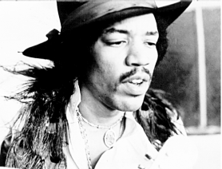
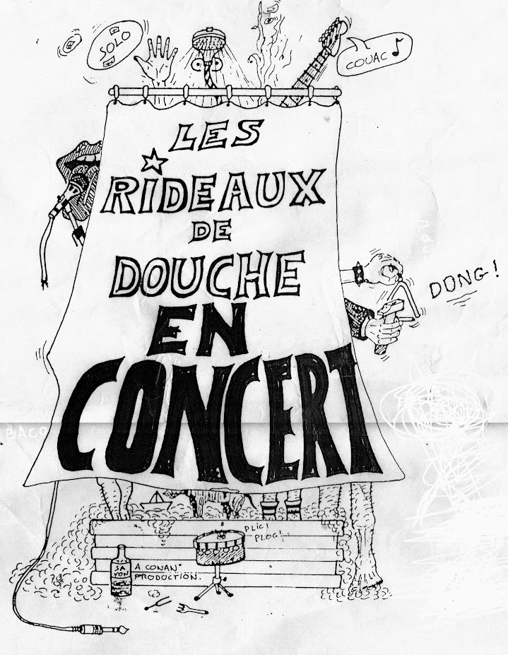
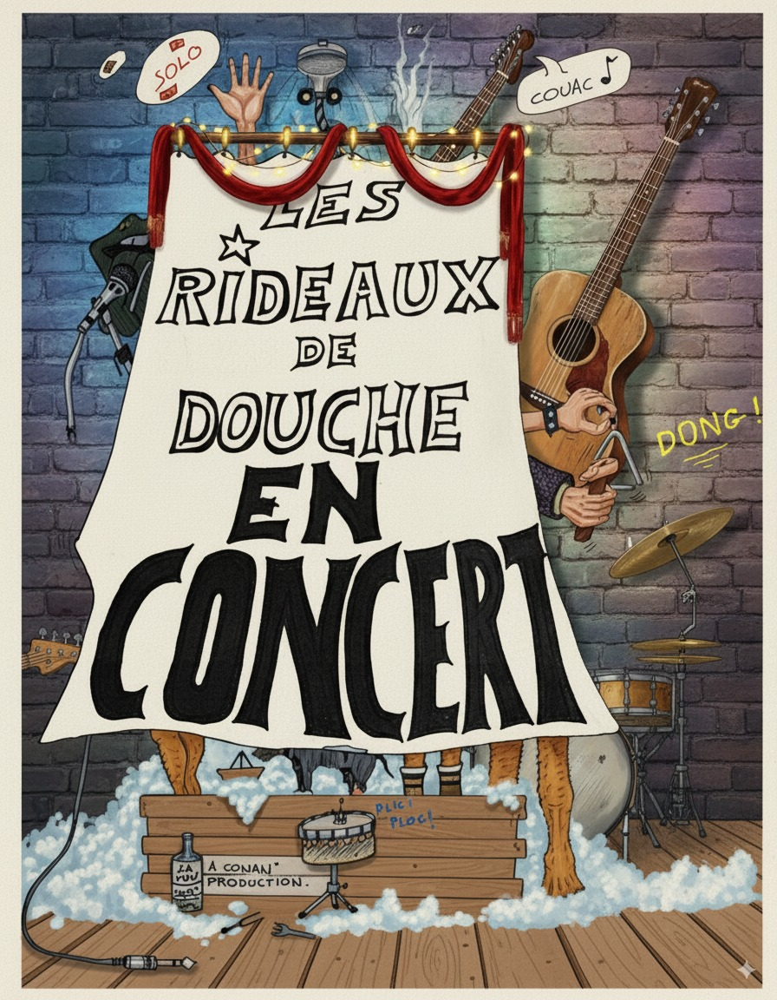
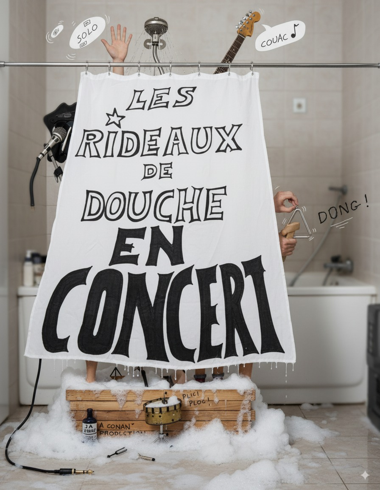

Les Rideaux de Douche
La légende du rock angevin des années 90, entièrement remasterisée.
L'Histoire des RDD
De la genèse chaotique d'un groupe mythique à sa fulgurante ascension.
La Genèse...
Fondé à l'initiative du fameux Chanoine Jean Jeanneteau (1812-1991) qui lança un jour aux membres du groupe : "go to Hell, Hassholes !" lorsqu'ils eurent le malheur de saccager son buffet normand, les RDD ont eu bien du mal à percer sur la scène Angevine, alors déjà encombrée de groupes foireux.
La formation initiale comprenant Flo ("Blondinet"), Stéph ("Ratounasse"), Benverie ("la grosse") et Dada ("Ringo martini") comprit vite qu'il fallait se restructurer avant d'avoir sorti le moindre son audible.
Le groupe décide alors de s'encanailler d'au moins un élément sachant lire une note : Olivier ("solo"), d'un bassiste : Mac ("Mac"), puis d'un batteur-chanteur-guitariste-pianiste-pipotiste polyvalent : Mel's ("Pascal Melot"). C'est le succès immédiat !
Anecdotes & Influence Mondiale
Les médias se les arrachent. Un concert mémorable est organisé à Pigalle (le Zénith étant déjà réservé par une grande artiste nationale).
L'influence du groupe se fait rapidement sentir à l'échelle internationale :
- The Rolling Stones : Soupçonnés de plagiat après avoir été aperçus reprenant honteusement Under My Thumb.
- Afric Simone : Les contacte en personne pour l'inauguration de l'Intermarché de Vitry-sur-Seine.
- Lenny Escudero : Propose un duo d'anthologie sur "La bonne du curé".
- Le Mystère Rido : Leur composition phare disparaît des bacs des supermarchés avant même d'y être posée.
Harcelé par les fans, le groupe finit par se disperser : Steph part aux US, Olivier et Mac se mettent aux abonnés absents, Damien s'achète un canapé, Flo repeint son appart, et Mel's... se repose.
L'Abbé Pierre parviendra-t-il à les convaincre de remonter sur scène ? Affaire à suivre...
Le Line-Up Légendaire
Flo
"Blondinet"
Stéph
"Ratounasse"
Mel's
Batteur-Chanteur
Dada (Damien)
"Ringo martini"
Olivier
"Solo"
La Discographie
Écoutez les deux albums cultes entièrement remasterisés et les raretés cassettes.

Sélectionnez un titre
Les Rideaux de Douche
| # | Titre | Écouter |
|---|
La Session 91
Le déroulement heure par heure d'une nuit d'enregistrement mythique du Garage Sound (20-21 Décembre 1991).
Rendez-vous glacial
Rassemblement général devant les portes extérieures du garage de l'ESEO à Angers. La nuit s'annonce fraîche.
La catastrophe
Toujours pas de magnétophone 4 pistes ! L'angoisse s'installe.
Le Sauveur
Le 4 pistes arrive enfin ! Mais le garage reste désespérément fermé. Benoit appelle en catastrophe Didier, qui dîne avec les nouveaux diplômés de l'école dans le hall.
Laborieux débuts
Entrée dans le garage et installation du matériel. Les premiers essais sonores s'avèrent extrêmement laborieux.
Première bande
Lancement des premiers enregistrements officiels. Début de la longue série de galères techniques.
La Trêve
Petite pause bien méritée avec les rescapés du dîner de gala dans le hall de l'école.
Rangement
Fin de session. On emballe les câbles, on démonte les pieds de micros et on remet le garage en état.
Petit-déjeuner du champion
Rassemblement final au buffet de la gare d'Angers pour un café chaud et un croissant bien mérité.
Affiches de concert
Découvrez les affiches mythiques des RDD, entre souvenirs d'époque et réinterprétations artistiques modernes.

Affiche Originale
L'affiche d'époque authentique qui ornait les murs des salles de concert dans les années 90.
Agrandir
Édition Pop-Art
Une réinterprétation vibrante et colorée rendant hommage au rock alternatif psychédélique.
Agrandir
Version Scène Brute
Une vision réaliste capturant l'esprit grunge et l'énergie scénique des Rideaux de Douche.
AgrandirRejoindre la Tribu
Laissez un message d'encouragement aux RDD sur le livre d'or officiel.
Signer le Livre d'Or
Livre d'Or des Fans
Découvrez les messages laissés par les fidèles des Rideaux de Douche.